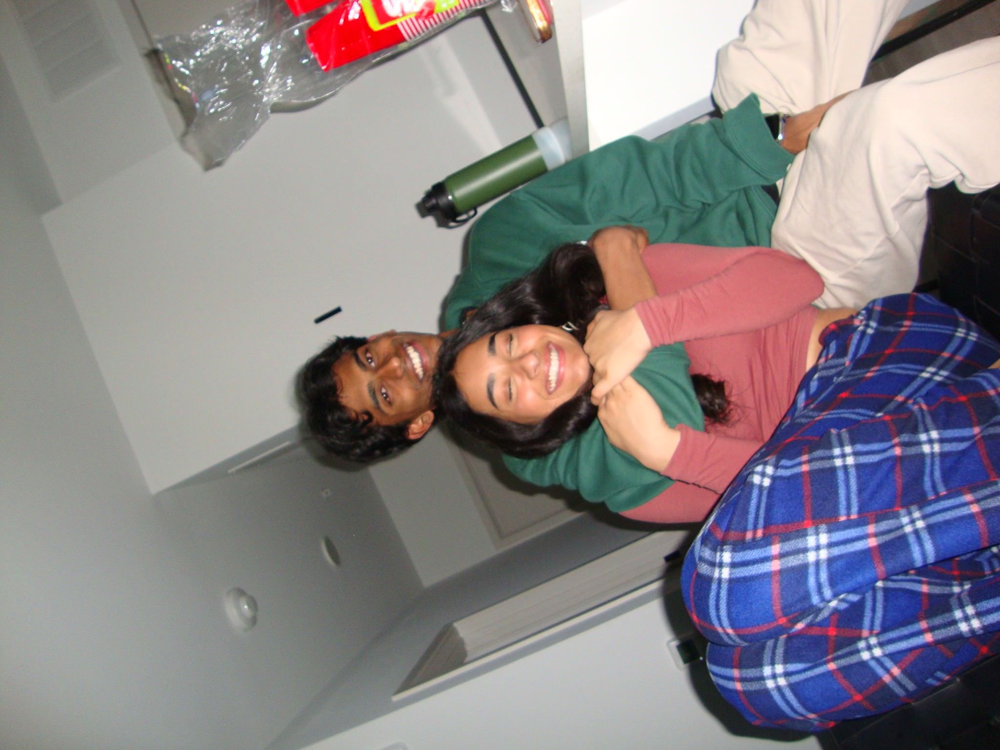
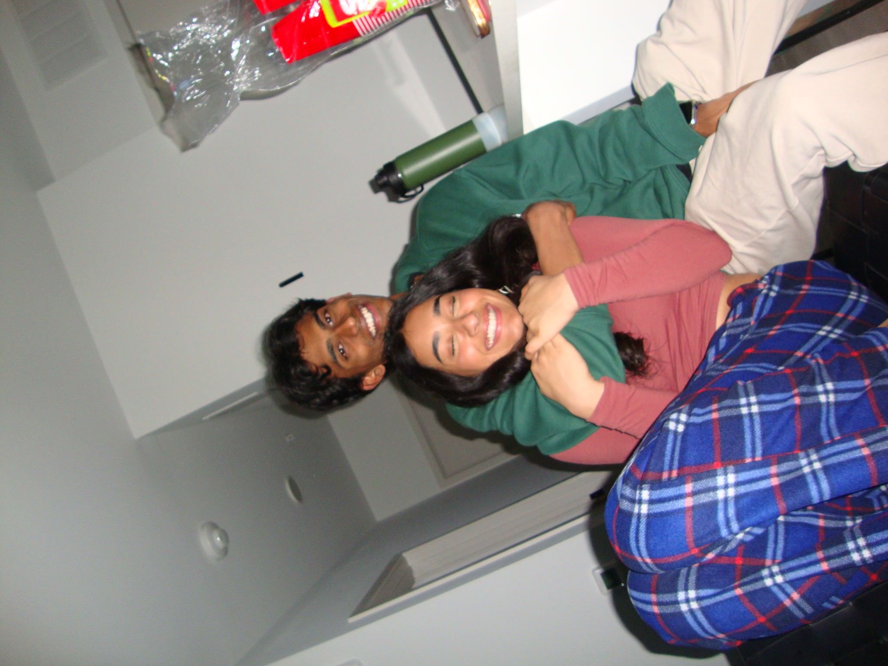
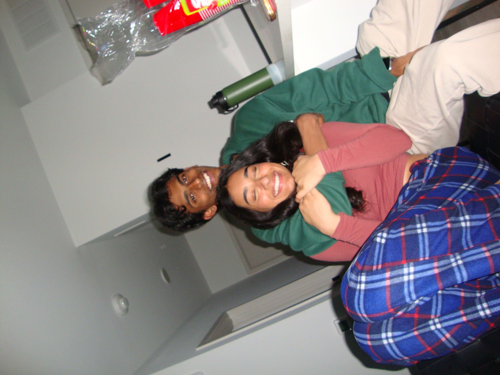

2 Days. It’s really funny you know. Cause if you read the past two paragraphs then you would know that it’s still the same day. The best part is that it’s literally 3 hours until that we hit midnight. Until we officially have been together for a year. Do you think like we are going to start glowing or like shine. Or maybe we are going to become absolutely massive and jacked. Or maybe we become like instant geniuses. Maybe we can ask Trump to make it a national holiday or a huge day. Hey wait it’s a holiday. Lmao you see what I did. Isn’t that funny. I’m such a comedic genius right? Nvm I don’t really want the answer to that one. I think I know what you’re going to say. Alright let’s get down to business. No fooling around. If you remember our 10 month anniversary, you better! It was actually a really special one to me. I literally love Ice skating soo much. Although I’m not great at it anymore. It’s still one of my favorite sports. Literally if there was a sport I could play right now which I dropped it would be hockey. The same cannot be said for you thats for sure. If you remember correctly you literally made me eat shit. Holy fuck that hurt soo much. You made us both eat shit. You made me look like a bad skater. I’m literally a decent skater. Because of you I embarrassed myself in front of the entire town of West Lafayette lmao. I’m just trolling. Not about the part you’re not a great ice skater. I think we both know why you didn’t pursue that passion lmao. I do hope you did for long enough that it stays in your blood, so that maybe one of our kids picks it up. I don’t know what I expected. Pairing your negative spacial awareness with ice skating was a horrible combination. You’re literally a dancer. I don’t understand how you weren’t able to balance on some ice skates. Oh well. Still I had a lot of fun that day. I really wanted to do that earlier in our relationship, being able to do it now was still fun. I think we can make regular visits during the winter season. Lol. I had a lot of fun with you. I remember telling my mom about how much fun I had ice skating here. Another carefree day with just you and me and doing some fun activities. I love you soo much Shreya. Till the end of the universe and back. Forever. Always.
